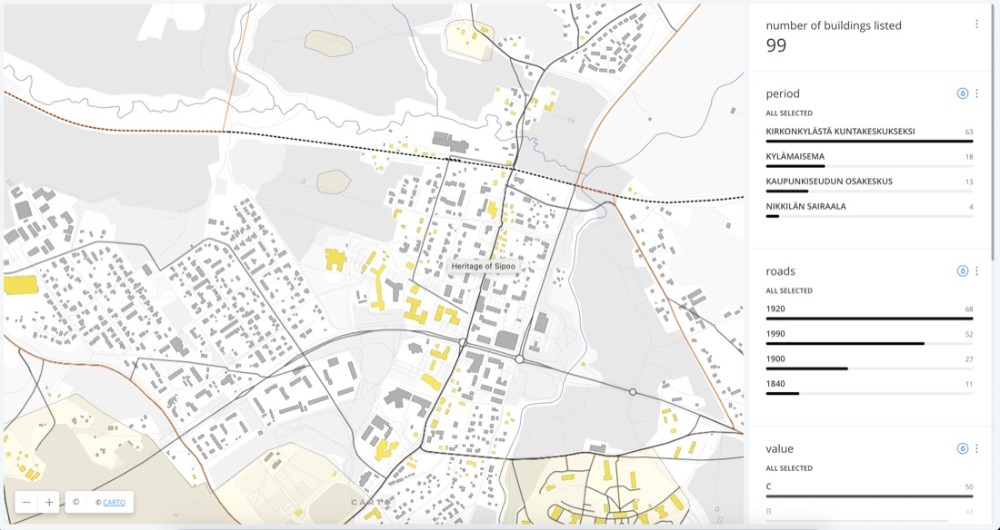

Heritage of Sipoo — Typomorphology Map
Before Sipoo’s town centre of Nikkilä could make informed decisions about its built heritage, it needed a clear, evidence-based picture of what it actually had — not just a list, but an understanding of how the settlement grew and which parts of it matter most.
Commissioned by the Municipality of Sipoo as a built-heritage survey of Nikkilä, delivered by SPIN Unit Lab in cooperation with heritage-data partner Livady. This was the first of what became a three-phase engagement, continuing into building-selection refinement and a colour analysis phase in 2020.
99 listed buildings were classified into four historical phases reflecting Nikkilä’s actual growth — from rural church village (1400–1850), through railway-driven expansion (1850–1914), around the former Nikkilä Hospital/Asylum (1914–1980), to the present — cross-referenced with road construction era (1840/1900/1920/1990) and an A/B/C heritage value grade. The result was published as a filterable interactive map (built on CARTO), rather than a static report.
Delivered as a live, public-facing dashboard letting users filter Nikkilä’s building stock by period, road age, and conservation value.
{kind=link}

Open full size ↗